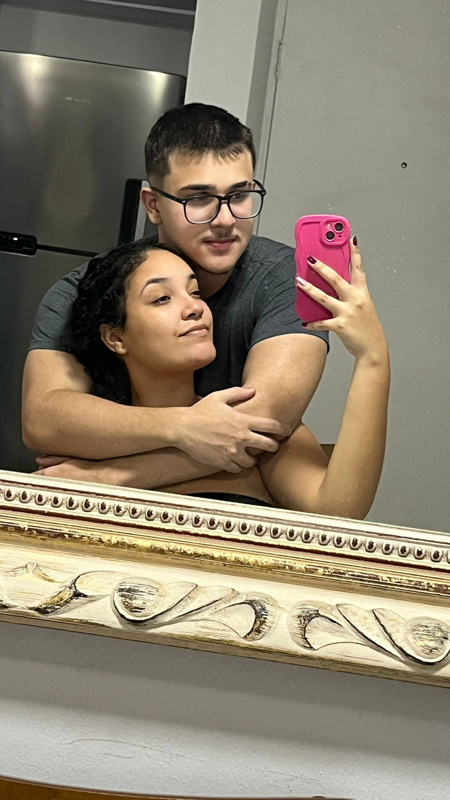
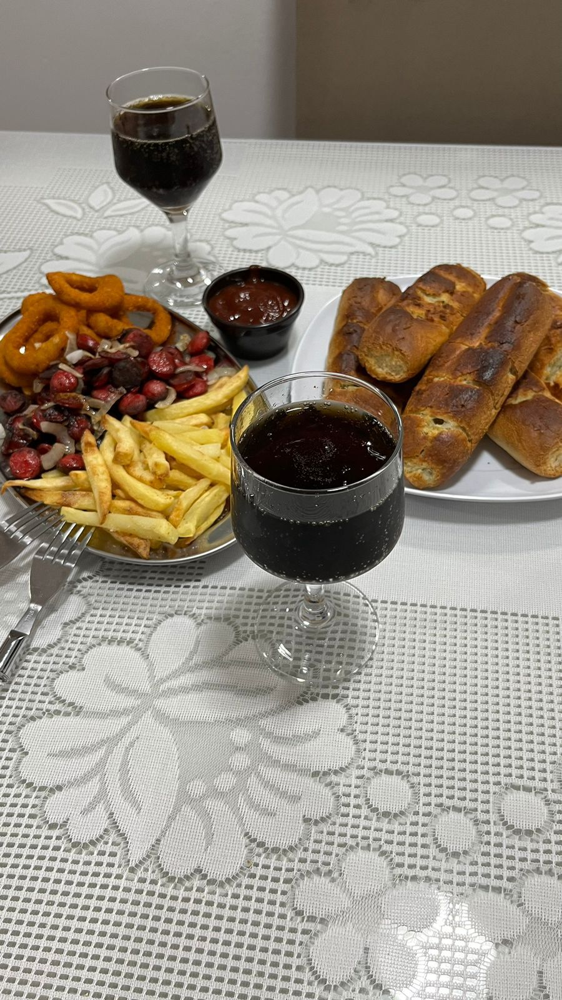
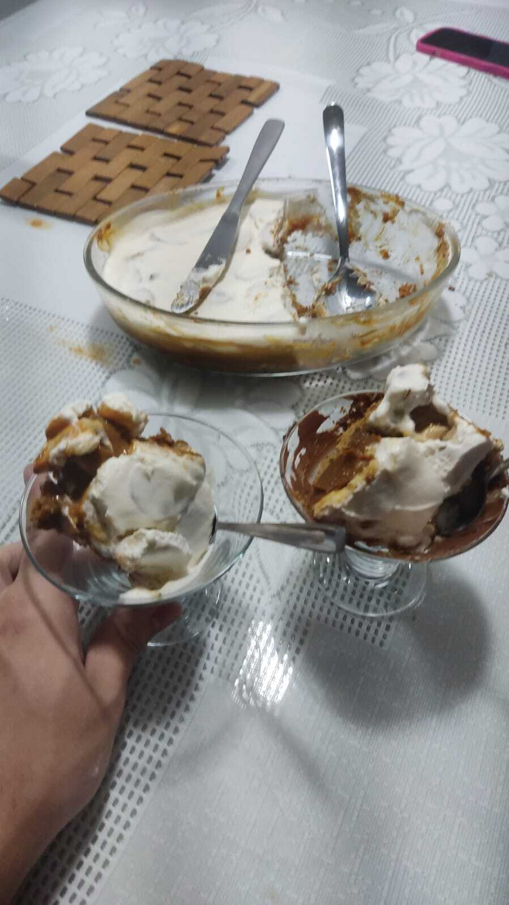
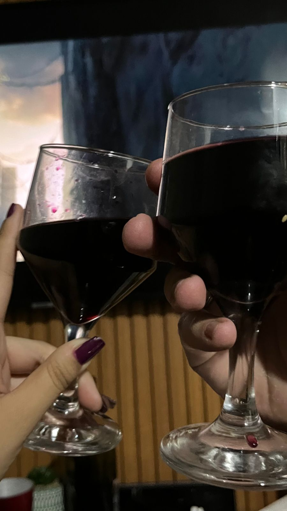
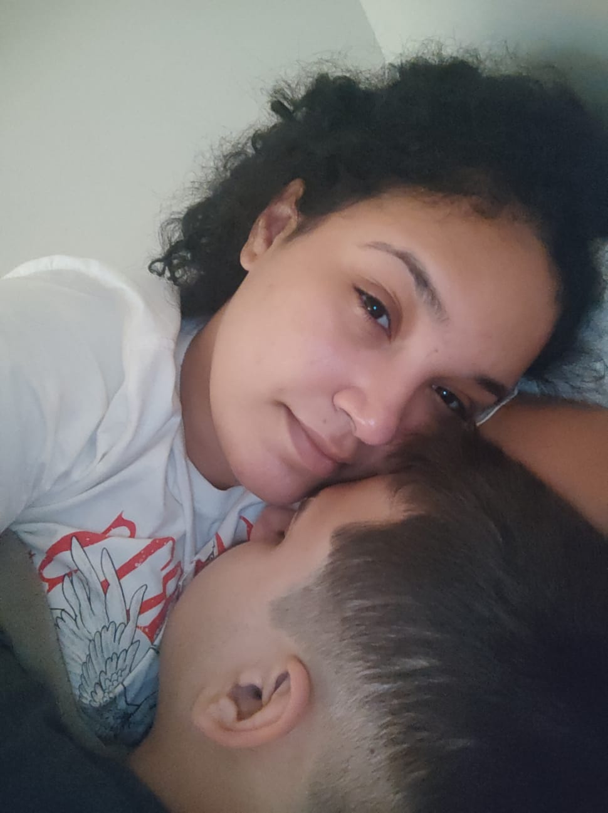
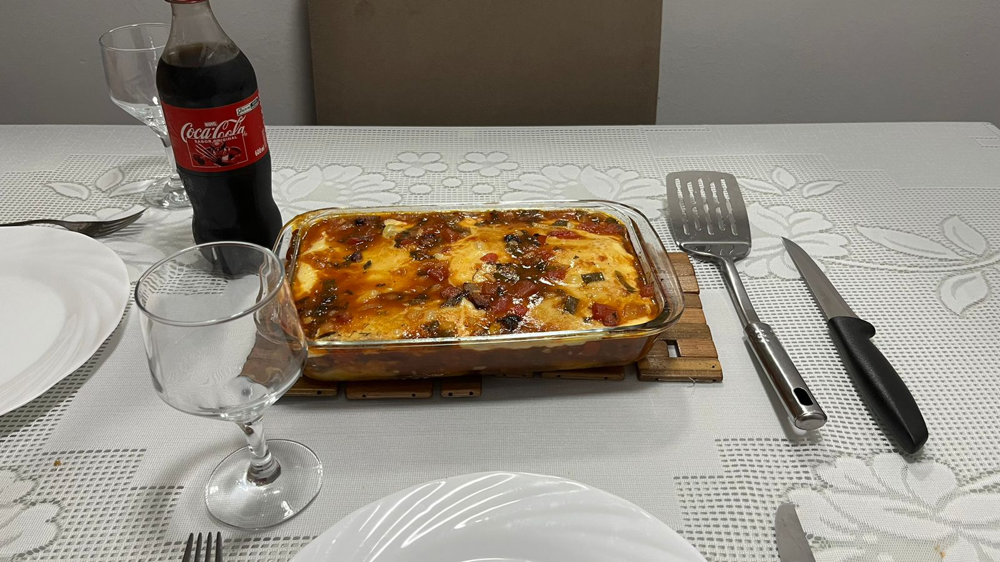

A primeira "Viagem"
Este foi o último capítulo que foi muito marcante em nosso relacionamento, o AirBnb. Alugamos um apartamento muito aconchegante e passamos dois dias lá e nossa senhora, que experiência maravilhosa.
Sábado

Eu me encontrei com ela na casa dela e de lá fomos direto para o mercado que ficava pertinho do apartamento, compramos algumas coisinhas que íamos precisar pra fazer as comidas e eu particularmente amei essa experiência de pré-casados. Depois disso fomos pro apartamento, guardamos as coisinhas e botamos a mão na massa, fizemos nosso almoço, depois a sobremesa e de noite a janta. Depois disso foi só aproveitar o tempinho em casal.
Comidinhas

Quando chegamos, preparamos um pratinho de batata-frita, linguiçam, anel de cebola e pão de alho (juro que não queimou) e ficou uma delícia, meu top 3 disso tudo.

Depois de alimentados, preparamos o banofe que nossa senhora, que delícia. Foi simplesmente maravilhoso ele.

E para jantar, fizemos uma degustação de hambúrguer, várias opções e montávamos da forma que queríamos e modéstia parte, temperei muito bem esse hambúrguer.
O fim do dia
E para finalizar com chave de ouro, tomamos vinho enquanto víamos Maze Runner. Nosso dia foi incrível, passamos um ótimo tempo de qualidade juntos e eu tenho certeza absoluta que isso nos uniu como casal.

Domingo

Como nem tudo são flores, Domingo eu acordei com cerca de 39° de febre e sobrou pra ela cuidar de mim, felizmente ela foi a melhor. Tomamos um café da manhã juntinhos, depois ela me deu remédio, mandou tomar banho e me fez dormir e acredite, eu acordei bem melhor depois disso e com o almoço quase pronto, minha mulher é incrível né ? Eu sei eu sei. Ajudei como pude e enfim, fomos almoçar para depois aproveitarmos o resto do dia.
E por fim, nós comemos o rondelli no almoço e na janta e de verdade, esse foi um dos melhores finais de semana da minha vida. Eu amei cada momento que passei com ela e mal posso esperar pelos próximos, tenho muita sorte de ter a Beatriz com minha namorada e amor, saiba que eu te amo muito. Um beijo <3

Eu me encontrei com ela na casa dela e de lá fomos direto para o mercado que ficava pertinho do apartamento, compramos algumas coisinhas que íamos precisar pra fazer as comidas e eu particularmente amei essa experiência de pré-casados. Depois disso fomos pro apartamento, guardamos as coisinhas e botamos a mão na massa, fizemos nosso almoço, depois a sobremesa e de noite a janta. Depois disso foi só aproveitar o tempinho em casal.
Quando chegamos, preparamos um pratinho de batata-frita, linguiçam, anel de cebola e pão de alho (juro que não queimou) e ficou uma delícia, meu top 3 disso tudo.
Depois de alimentados, preparamos o banofe que nossa senhora, que delícia. Foi simplesmente maravilhoso ele.
E para jantar, fizemos uma degustação de hambúrguer, várias opções e montávamos da forma que queríamos e modéstia parte, temperei muito bem esse hambúrguer.
E para finalizar com chave de ouro, tomamos vinho enquanto víamos Maze Runner. Nosso dia foi incrível, passamos um ótimo tempo de qualidade juntos e eu tenho certeza absoluta que isso nos uniu como casal.
Como nem tudo são flores, Domingo eu acordei com cerca de 39° de febre e sobrou pra ela cuidar de mim, felizmente ela foi a melhor. Tomamos um café da manhã juntinhos, depois ela me deu remédio, mandou tomar banho e me fez dormir e acredite, eu acordei bem melhor depois disso e com o almoço quase pronto, minha mulher é incrível né ? Eu sei eu sei. Ajudei como pude e enfim, fomos almoçar para depois aproveitarmos o resto do dia.
E por fim, nós comemos o rondelli no almoço e na janta e de verdade, esse foi um dos melhores finais de semana da minha vida. Eu amei cada momento que passei com ela e mal posso esperar pelos próximos, tenho muita sorte de ter a Beatriz com minha namorada e amor, saiba que eu te amo muito. Um beijo <3